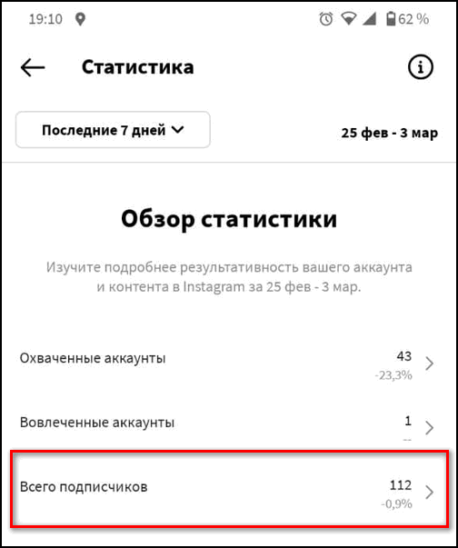
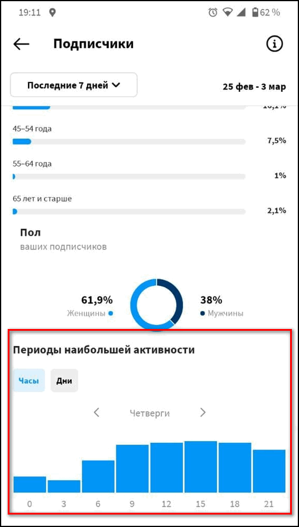

Лучшее время для публикации Рилс в Инстаграме для большего эффекта

Лучшее время для Рилс в Инстаграме* пользователь подбирает с учетом тематики своего профиля, целевой аудитории. Определить можно несколькими способами: самостоятельно посмотреть через статистику или же обратиться к дополнительным сервисам.
Как выбрать время размещения Reels в Инстаграме*
С помощью вкладки «Статистика» можно определить, когда лучше выкладывать Рилс в Инстаграме*. Функция доступна в аккаунтах авторов и бизнес, при наличии подписчиков от 100 человек. Если же аудитория меньше – посмотреть не получится.
Как определить:
- Зайти в Инстаграм* – нажать по трем полоскам сверху.
- В выпадающем списке выбрать: «Статистика» - Аудитория.

- Появится несколько диаграмм, показывающих: возраст, половую принадлежность, город или страну.
- Ниже: «Время активности».

В соответствии с последним графиком можно составить план дальнейшего размещения публикаций не только в Reels, а и в Stories, IGTV. Это та аудитория, которая уже оформила подписку на профиль. Но помимо уже подписанных, есть и потенциальные зрители. Чтобы собрать больше аудиторию и получить новых подписчиков, владельцу профиля нужно определиться с ЦА: её возраст, пол и географическое положение.
Собрать больше просмотров по Рилс
Лучше выкладывать Рилс в Инстаграме* в утреннее время, когда пользователи заходят в сеть и смотрят Ленту, не обращая внимания на текстовое составляющее.
По статистике, 68% пользователей от 16 лет после утреннего пробуждения посещают социальные сети, чтобы проверить последние новости от друзей, знакомых и любимых блогеров. Как собирать больше просмотров в социальной сети:
- Выбрать для себя тематику – определить, какой возрастной категории она будет интересна.
- Посмотреть видео о конкурентов по такой же теме.
- Использовать популярное аудио, чтобы собрать больше подписчиков.
Идеи, как сделать клипы более просматриваемыми:
- видео с домашними питомцами набирают больше просмотров, чем остальные;
- хештеги. Использовать теги, которые соответствуют тематике страницы;
- ремиксы. Снимать ответы на клипы других пользователей;
- социальные ролики. Короткие истории обладающие моральной стороной;
- публикации «До и после». Например, переодевания или как автор изменился за несколько лет.
Тренды меняются постоянно, поэтому автору контента нужно следить за изменениями и внедрять некоторые из идей в своем профиле.
Почему нужно учитывать время публикации
Время публикации влияет на возможность пользователей просматривать контент. Для каждой тематики и отдельных блогов есть свои временные рамки. Например:
- видео по кулинарии лучше размещать днем или ближе к вечеру. Пользователи в это время нередко ищут рецепты завтраков, обедов на следующий день;
- социальные ролики просматриваемы вечером и утром. Перед сном или как только пользователи заходят в социальные сети;
- спортивные тренировки лучше публиковать на выходных или, если они выполнены в виде утренней зарядки, утром.
Для каждого блога есть свое время размещения: в это время аудитория наиболее активна и оставит больше взаимодействий. Что повлияет на дальнейшее продвижение и поможет вывести публикацию в ТОП.
Какие дни выбрать для публикации Reels
Лучше публиковать Рилс в Инстаграм* по графику, составленному индивидуально. Но если автор блога только начинает путь в продвижении и не знает, какие дни недели подобрать:
- понедельник. Важная информация, пост-знакомство и записи, содержащие график работы, доставок, новой продукции;
- среда. Информационные записи: общие данные, рассуждения автора;
- пятница. Развлекательные посты.
В остальное время заполняют другие разделы, преимущественно Stories или же оставляют текстовые публикации. График размещения может быть обратным, если автор выбрал в обозначенные дни публиковать записи в Ленту.